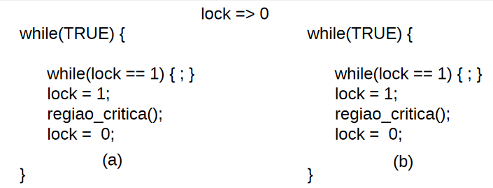
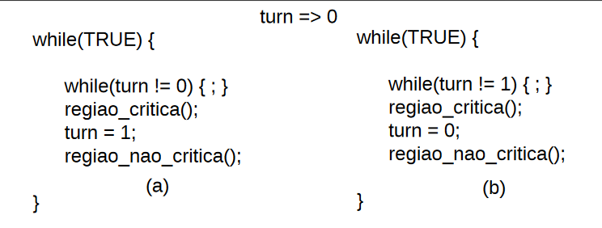
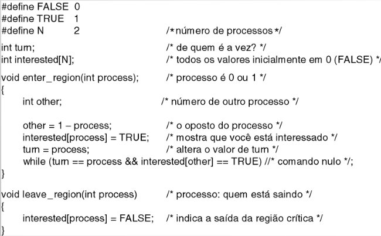
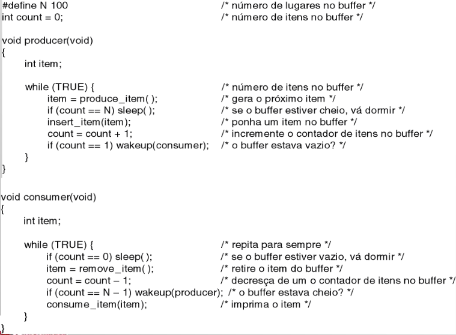
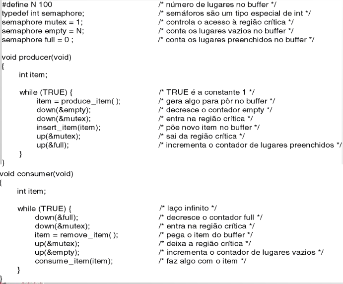
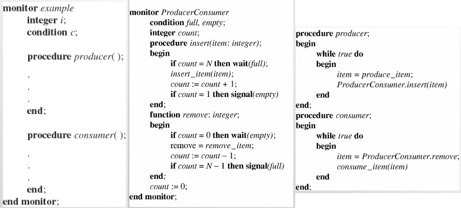
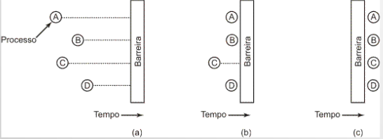

⬅ voltar resumão
🤓 RESUMO: Concorrência 💻
Condição de disputa (corrida), região crítica, exclusão mútua
Condições de Disputa/Corrida (Race Condition)
Dois processos querem ter acesso simultaneamente a um recurso compartilhado
Região crítica
Parte do programa onde a memória compartilhada é acessada.
Condições necessárias para prover exclusão mútua:
- Dois processos nunca podem estar simultaneamente em uma mesma região crítica.
- Não se pode considerar velocidades ou número de CPUs.
- Nenhum processo executando fora de sua região crítica pode bloquear outros processos.
- Nenhum processo deve esperar eternamente para entrar em sua região crítica.
Técnicas não apropriadas para exclusão mútua
- Desabilitação de Interrupções ao acessar região crítica, afeta o sistema pode ser multiprocessado,
e, portanto, não muito efetivo.
- Variáveis de bloqueio (lock): mesmo problema do diretório de spool
Espera ocupada com variáveis de bloqueio

Espera ocupada com alternância estrita

Solução de G.L. Peterson para exclusão mútua

Problema da espera ocupada
Desperdiça tempo de CPU, pode provocar deadlocks.
Problema do produtor consumidor
- Não é apenas uma questão de exclusão mútua!
- se consumo > produção, buffer esvazia -> consumidor não tem o que consumir.
- se consumo < produção, buffer enche -> produtor não consegue produzir mais.

Semáforo

- Variável que tem como função o controle de acesso a recursos compartilhados.
- Indica quantos processos (ou threads) podem ter acesso a um recurso compartilhado.
Para se ter exclusão mútua, só um processo executa por vez, para isso utiliza-se um
semáforo binário. Esse semáforo atua como um mutex.
Principais operações sobre semáforos:
- Inicialização: recebe um valor inteiro indicando quantos processos podem acessar um
determinado recurso.
- wait ou down ou P: decrementa o valor do semáforo. Se o semáforo está com valor 0,
o processo é posto para dormir.
- signal ou up ou V: se o semáforo estiver com o valor 0 e existir algum processo
adormecido, um processo será acordado.
As operações de incrementar e decrementar devem ser operações atômicas ou indivisíveis.
Apenas um processo por vez executando essas operações.
Monitores

- Coleção de rotinas, variáveis e estruturas de dados.
- Só um processo ativo no monitorem qualquer momento.
- Dependem de suporte linguístico (são construções da linguagem).
- Usam mutexes e semáforos internamente.
Troca de mensagens
Barreiras: Sincronização

- processos se aproximando de uma barreira
- todos os processos, exceto um, bloqueados pela barreira
- último processo chega, todos passam